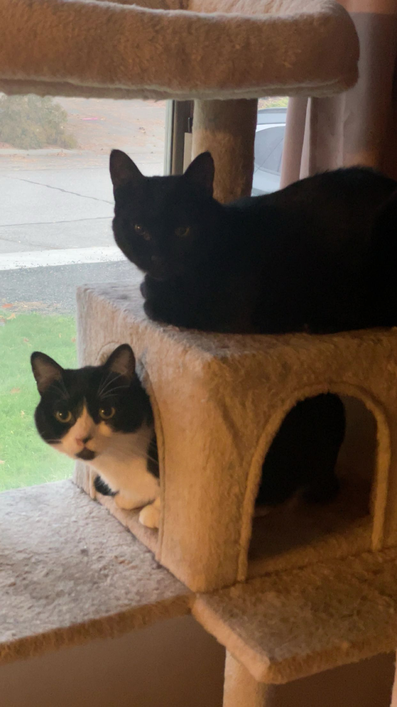
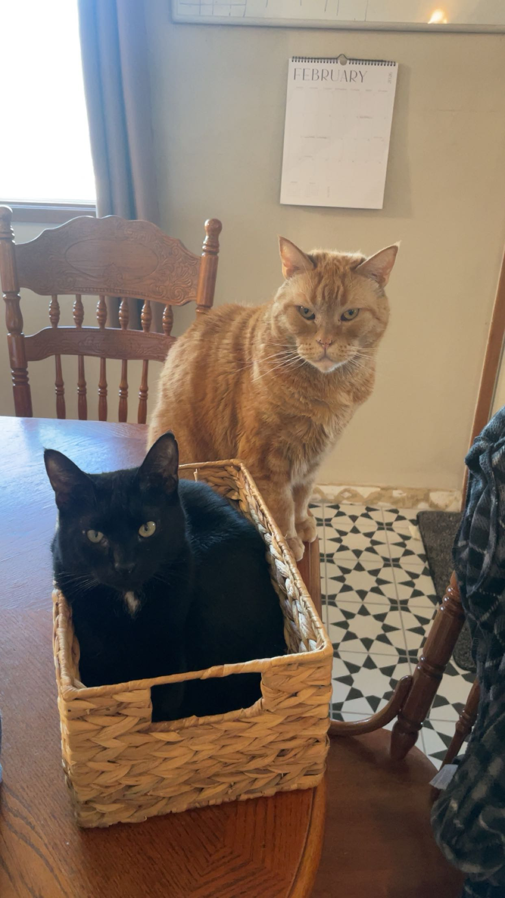

Meet the Cats!


My family has 3 cats at home Rosemary (my cat), Sage (my mom's cat), Figaro (my sister's cat). Each of them have a very distinct personality and habits. Click their names at the top to learn more about them!
Have questions about my cats?
Send Me an Email!